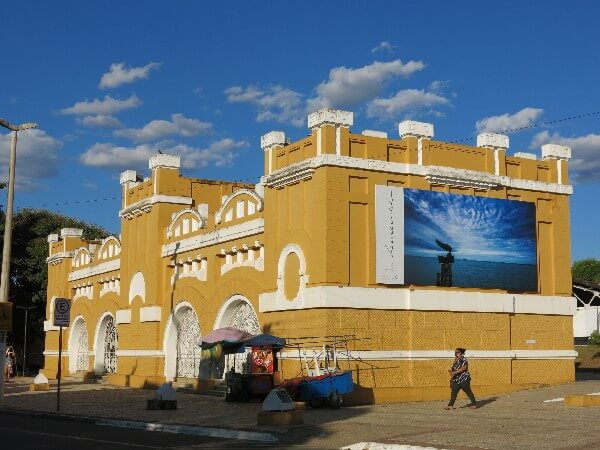

INÍCIO
CRATO
JUAZEIRO DO NORTE
BARBALHA
Locais Religiosos
Locais Turísticos
Restaurantes e Bares
Hotéis e Pousadas
Menu
Locais Religiosos
Locais Turísticos
Restaurantes e Bares
Hotéis e Pousadas
Geopark Araripe
Clique Aqui
Balneário Serrano Atlético Cratense
Clique Aqui
Caldeirão de Santa Cruz do Deserto
Clique Aqui
Centro Cultural do Cariri
Clique Aqui
Parque Estadual Sítio Fundão
Clique Aqui
Geossítio Batateiras
Clique Aqui
Parque de Exposição Pedro Felício Cavalcante
Clique Aqui

Centro Cultural do Araripe - RFFSA
Clique Aqui
Clube Recreativo Grangeiro
Clique Aqui
Monumento de Nossa Senhora de Fátima
Clique Aqui